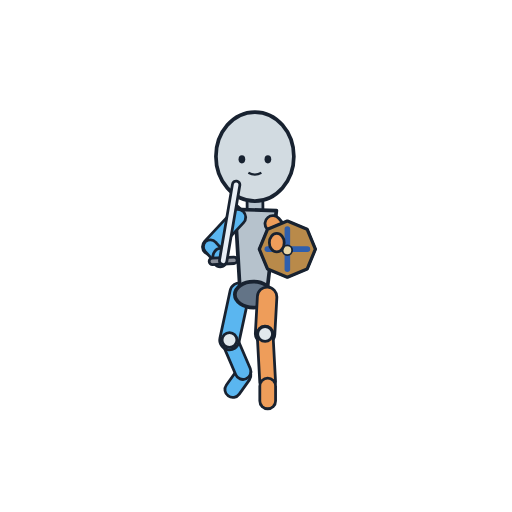
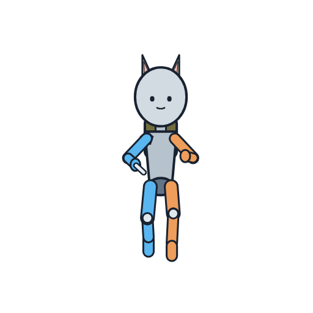
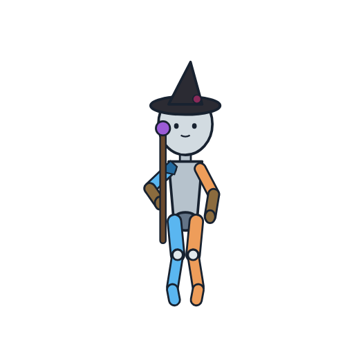
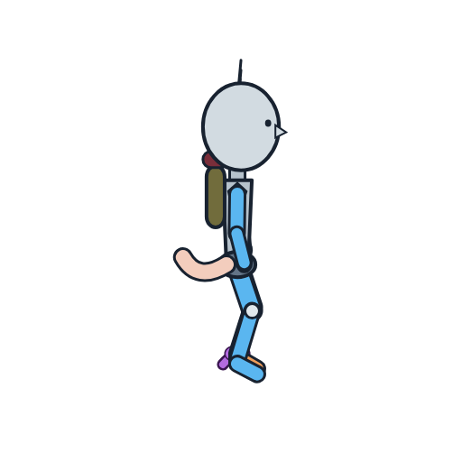
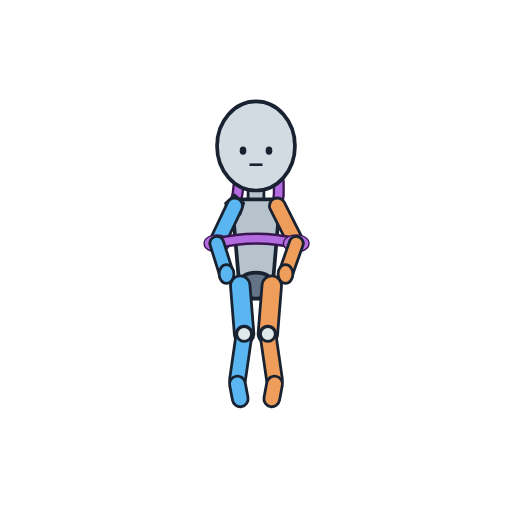

切り抜きでモーションを完成させる（ChatGPT で試し）
通常3つ・場面2つ。モーションごとに ZIP を ChatGPT に添付して、文を貼って送る。
場面の2つ（足首をつかまれる・後ろから抱えられる）には「場面の見た目」の空欄があります。空のまま送れば控えめ版、あなたの言葉を書き込めば露骨版として比べられます。
場面の2つ（足首をつかまれる・後ろから抱えられる）には「場面の見た目」の空欄があります。空のまま送れば控えめ版、あなたの言葉を書き込めば露骨版として比べられます。
アリア（戦士）：破城斬り（跳び上がって叩きつけ） 正面・11コマ・描いてある 4コマ

ZIP を保存（姿勢の図・描いてあるコマ・部品用の絵）
添付の ZIP（aria__heavy__front.zip）の中身を使って、2Dゲームのキャラクター「アリア」のアニメーション「破城斬り（跳び上がって叩きつけ）」（向き：正面、全11コマ）を完成させてください。 ■ ZIP の中身 ・pose/00.png〜10.png：各コマの姿勢の図（マネキン）。青＝本人の右半身、橙＝左半身、灰色＝胴と頭。 ・keys/：あなた（ChatGPT）が前に描いた、このアニメーションのコマ（番号＝コマ番号：1・3・6・7） ・parts/：同じキャラクター・同じ向きの、ほかの絵（14枚） ■ やってほしいこと 1. keys/ の絵をそのまま使い、足りないコマ（0・2・4・5・8・9・10）を作る 2. 新しく一から描くのではなく、keys/ と parts/ の絵から、頭・胴・腕・脚・髪・持ち物を切り抜き、pose/ の姿勢の図に合わせて回転・移動・変形して組み合わせる（画像処理のコードを書いて実行してよい） 3. 顔・髪型・衣装・色・大きさは keys/ の絵と同じに保つ（同じ人物に見えることが最優先） 4. 切り抜きの境目（関節・首・肩・腰）に隙間・段差・線の切れ目が出ないよう、つなぎ目は周りに合わせて描き直してよい。 5. 全コマ同じ大きさの正方形（keys/ と同じサイズ）、背景は透明。足元の高さと体の大きさは全コマでそろえる ■ 返してほしいもの ・aria__heavy__front__00.png〜aria__heavy__front__10.png（全コマ。keys/ の分もそのまま入れる）を1つの ZIP で ・つなげて確かめられる GIF（1コマ 106ms 前後） ・作れなかったコマがあれば、その番号と理由
斥候（シーフ）：斥候：低く横へ跳んで身をかわす 正面・8コマ・描いてある 2コマ

ZIP を保存（姿勢の図・描いてあるコマ・部品用の絵）
添付の ZIP（scout__scout_sidestep__front.zip）の中身を使って、2Dゲームのキャラクター「斥候」のアニメーション「斥候：低く横へ跳んで身をかわす」（向き：正面、全8コマ）を完成させてください。 ■ ZIP の中身 ・pose/00.png〜07.png：各コマの姿勢の図（マネキン）。青＝本人の右半身、橙＝左半身、灰色＝胴と頭。 ・keys/：あなた（ChatGPT）が前に描いた、このアニメーションのコマ（番号＝コマ番号：3・5） ・parts/：同じキャラクター・同じ向きの、ほかの絵（14枚） ■ やってほしいこと 1. keys/ の絵をそのまま使い、足りないコマ（0・1・2・4・6・7）を作る 2. 新しく一から描くのではなく、keys/ と parts/ の絵から、頭・胴・腕・脚・髪・持ち物を切り抜き、pose/ の姿勢の図に合わせて回転・移動・変形して組み合わせる（画像処理のコードを書いて実行してよい） 3. 顔・髪型・衣装・色・大きさは keys/ の絵と同じに保つ（同じ人物に見えることが最優先） 4. 切り抜きの境目（関節・首・肩・腰）に隙間・段差・線の切れ目が出ないよう、つなぎ目は周りに合わせて描き直してよい。 5. 全コマ同じ大きさの正方形（keys/ と同じサイズ）、背景は透明。足元の高さと体の大きさは全コマでそろえる ■ 返してほしいもの ・scout__scout_sidestep__front__00.png〜scout__scout_sidestep__front__07.png（全コマ。keys/ の分もそのまま入れる）を1つの ZIP で ・つなげて確かめられる GIF（1コマ 58ms 前後） ・作れなかったコマがあれば、その番号と理由
魔法使い：魔法使い：義腕の手のひらを向けて障壁を張る 正面・10コマ・描いてある 1コマ

ZIP を保存（姿勢の図・描いてあるコマ・部品用の絵）
添付の ZIP（mage__mage_barrier__front.zip）の中身を使って、2Dゲームのキャラクター「魔法使い」のアニメーション「魔法使い：義腕の手のひらを向けて障壁を張る」（向き：正面、全10コマ）を完成させてください。 ■ ZIP の中身 ・pose/00.png〜09.png：各コマの姿勢の図（マネキン）。青＝本人の右半身、橙＝左半身、灰色＝胴と頭。 ・keys/：あなた（ChatGPT）が前に描いた、このアニメーションのコマ（番号＝コマ番号：4） ・parts/：同じキャラクター・同じ向きの、ほかの絵（14枚） ■ やってほしいこと 1. keys/ の絵をそのまま使い、足りないコマ（0・1・2・3・5・6・7・8・9）を作る 2. 新しく一から描くのではなく、keys/ と parts/ の絵から、頭・胴・腕・脚・髪・持ち物を切り抜き、pose/ の姿勢の図に合わせて回転・移動・変形して組み合わせる（画像処理のコードを書いて実行してよい） 3. 顔・髪型・衣装・色・大きさは keys/ の絵と同じに保つ（同じ人物に見えることが最優先） 4. 切り抜きの境目（関節・首・肩・腰）に隙間・段差・線の切れ目が出ないよう、つなぎ目は周りに合わせて描き直してよい。 5. 全コマ同じ大きさの正方形（keys/ と同じサイズ）、背景は透明。足元の高さと体の大きさは全コマでそろえる ■ 返してほしいもの ・mage__mage_barrier__front__00.png〜mage__mage_barrier__front__09.png（全コマ。keys/ の分もそのまま入れる）を1つの ZIP で ・つなげて確かめられる GIF（1コマ 54ms 前後） ・作れなかったコマがあれば、その番号と理由
斥候（シーフ）：足首をつかまれて後ろへ引かれ、よろけて四つん這いになる 真横（右向き）・17コマ・描いてある 4コマ

ZIP を保存（姿勢の図・描いてあるコマ・部品用の絵）
添付の ZIP（scout__ankle_grabbed__right.zip）の中身を使って、2Dゲームのキャラクター「斥候」のアニメーション「足首をつかまれて後ろへ引かれ、よろけて四つん這いになる」（向き：真横（右向き）、全17コマ）を完成させてください。 ■ ZIP の中身 ・pose/00.png〜16.png：各コマの姿勢の図（マネキン）。青＝本人の右半身、橙＝左半身、灰色＝胴と頭。紫の線や塊は、つかんでいるもの・抱えているものの位置。 ・keys/：あなた（ChatGPT）が前に描いた、このアニメーションのコマ（番号＝コマ番号：0・4・6・14） ・parts/：同じキャラクター・同じ向きの、ほかの絵（14枚） ■ やってほしいこと 1. keys/ の絵をそのまま使い、足りないコマ（1・2・3・5・7・8・9・10・11・12・13・15・16）を作る 2. 新しく一から描くのではなく、keys/ と parts/ の絵から、頭・胴・腕・脚・髪・持ち物を切り抜き、pose/ の姿勢の図に合わせて回転・移動・変形して組み合わせる（画像処理のコードを書いて実行してよい） 3. 顔・髪型・衣装・色・大きさは keys/ の絵と同じに保つ（同じ人物に見えることが最優先） 4. 切り抜きの境目（関節・首・肩・腰）に隙間・段差・線の切れ目が出ないよう、つなぎ目は周りに合わせて描き直してよい。つかんでいるもの・抱えているものは、keys/ の絵に描かれているものと同じ見た目で、姿勢の図の紫の位置に置く。 5. 全コマ同じ大きさの正方形（keys/ と同じサイズ）、背景は透明。足元の高さと体の大きさは全コマでそろえる ■ 場面の見た目（ここにあなたの言葉を入れる。空のままなら控えめ版） ・ ■ 返してほしいもの ・scout__ankle_grabbed__right__00.png〜scout__ankle_grabbed__right__16.png（全コマ。keys/ の分もそのまま入れる）を1つの ZIP で ・つなげて確かめられる GIF（1コマ 43ms 前後） ・作れなかったコマがあれば、その番号と理由
アリア（戦士）：後ろから腕ごと胴を抱きすくめられ、もがく 正面・8コマ・描いてある 2コマ

ZIP を保存（姿勢の図・描いてあるコマ・部品用の絵）
添付の ZIP（aria__held_from_behind__front.zip）の中身を使って、2Dゲームのキャラクター「アリア」のアニメーション「後ろから腕ごと胴を抱きすくめられ、もがく」（向き：正面、全8コマ）を完成させてください。 ■ ZIP の中身 ・pose/00.png〜07.png：各コマの姿勢の図（マネキン）。青＝本人の右半身、橙＝左半身、灰色＝胴と頭。紫の線や塊は、つかんでいるもの・抱えているものの位置。 ・keys/：あなた（ChatGPT）が前に描いた、このアニメーションのコマ（番号＝コマ番号：0・2） ・parts/：同じキャラクター・同じ向きの、ほかの絵（14枚） ■ やってほしいこと 1. keys/ の絵をそのまま使い、足りないコマ（1・3・4・5・6・7）を作る 2. 新しく一から描くのではなく、keys/ と parts/ の絵から、頭・胴・腕・脚・髪・持ち物を切り抜き、pose/ の姿勢の図に合わせて回転・移動・変形して組み合わせる（画像処理のコードを書いて実行してよい） 3. 顔・髪型・衣装・色・大きさは keys/ の絵と同じに保つ（同じ人物に見えることが最優先） 4. 切り抜きの境目（関節・首・肩・腰）に隙間・段差・線の切れ目が出ないよう、つなぎ目は周りに合わせて描き直してよい。つかんでいるもの・抱えているものは、keys/ の絵に描かれているものと同じ見た目で、姿勢の図の紫の位置に置く。 5. 全コマ同じ大きさの正方形（keys/ と同じサイズ）、背景は透明。足元の高さと体の大きさは全コマでそろえる ■ 場面の見た目（ここにあなたの言葉を入れる。空のままなら控えめ版） ・ ■ 返してほしいもの ・aria__held_from_behind__front__00.png〜aria__held_from_behind__front__07.png（全コマ。keys/ の分もそのまま入れる）を1つの ZIP で ・つなげて確かめられる GIF（1コマ 110ms 前後） ・作れなかったコマがあれば、その番号と理由